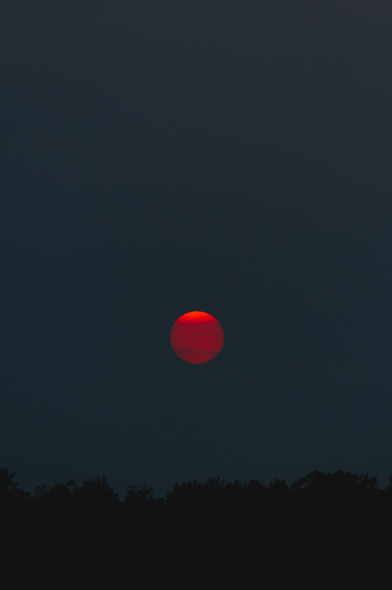

Stars
brown-dwarfs
Brown dwarfs are substellar objects that are not massive enough to sustain nuclear fusion of ordinary hydrogen (1H) into helium in their cores, unlike a main-sequence star. Instead, they have a mass between the most massive gas giant planets and the least massive stars, approximately 13 to 80 times that of Jupiter (MJ).[2][3] However, they can fuse deuterium (2H), and the most massive ones (> 65 MJ) can fuse lithium
red-dwarfs

A red dwarf is the smallest and coolest kind of star on the main sequence. Red dwarfs are by far the most common type of star in the Milky Way, at least in the neighborhood of the Sun, but because of their low luminosity, individual red dwarfs cannot be easily observed. From Earth, not one star that fits the stricter definitions of a red dwarf is visible to the naked eye.[1] Proxima Centauri, the nearest star to the Sun, is a red dwarf, as are fifty of the sixty nearest stars. According to some estimates, red dwarfs make up three-quarters of the stars in the Milky Way.
orange-dwarfs
wiki-linkA K-type main-sequence star, also referred to as a K-type dwarf or an orange dwarf, is a main-sequence (hydrogen-burning) star of spectral type K and luminosity class V. These stars are intermediate in size between red M-type main-sequence stars ("red dwarfs") and yellow/white G-type main-sequence stars. They have masses between 0.5 and 0.8 times the mass of the Sun[1] and surface temperatures between 3,900 and 5,200 K.[2] These stars are of particular interest in the search for extraterrestrial life due to their stability and long lifespan. Well-known examples include Alpha Centauri B (K1 V) and Epsilon Indi (K5 V).
yellow-dwarfs

A G-type main-sequence star (Spectral type: G-V), also often called a yellow dwarf, or G star, is a main-sequence star (luminosity class V) of spectral type G. Such a star has about 0.9 to 1.1 solar masses and an effective temperature between about 5,300 and 6,000 K. Like other main-sequence stars, a G-type main-sequence star is converting the element hydrogen to helium in its core by means of nuclear fusion, but however can also fuse helium when hydrogen runs out. The Sun, the star to which the Earth is gravitationally bound in the center of the Solar System, is an example of a G-type main-sequence star (G2V type). Each second, the Sun fuses approximately 600 million tons of hydrogen into helium in a process known as the proton–proton chain (4 hydrogens form 1 helium), converting about 4 million tons of matter to energy.[1][2] Besides the Sun, other well-known examples of G-type main-sequence stars include Alpha Centauri, Tau Ceti, Capella and 51 Pegasi.
largest stars habitability

A giant star is a star with substantially larger radius and luminosity than a main-sequence (or dwarf) star of the same surface temperature.[1] They lie above the main sequence (luminosity class V in the Yerkes spectral classification) on the Hertzsprung–Russell diagram and correspond to luminosity classes II and III.[2] The terms giant and dwarf were coined for stars of quite different luminosity despite similar temperature or spectral type by Ejnar Hertzsprung about 1905.